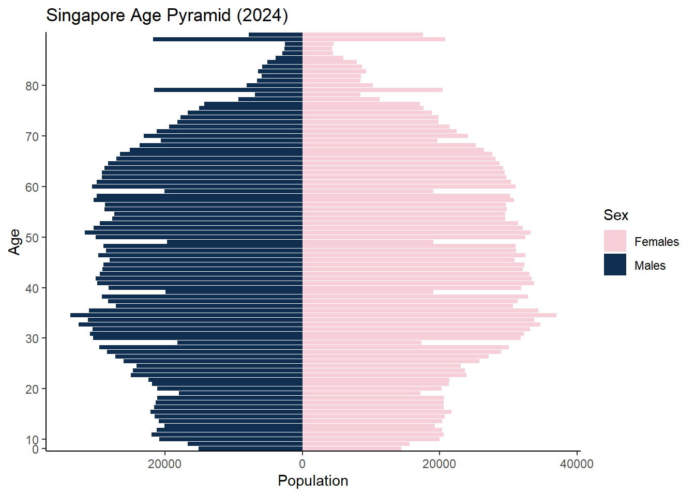
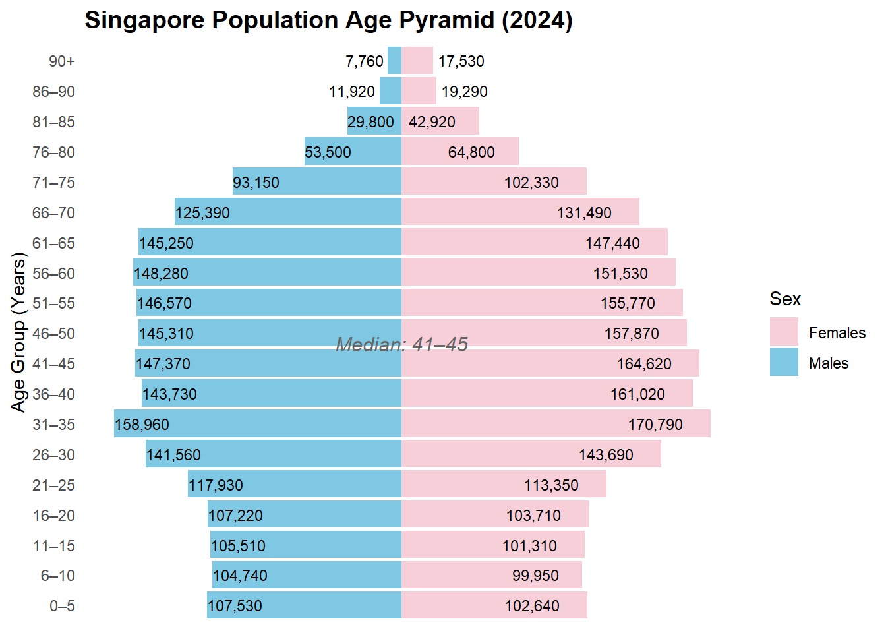
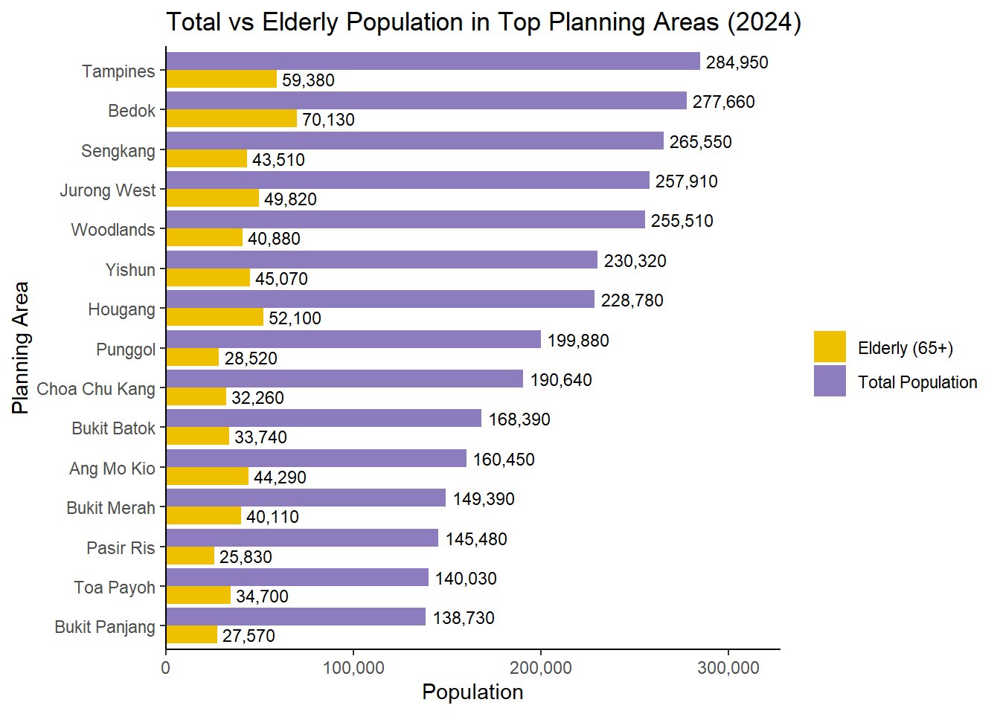
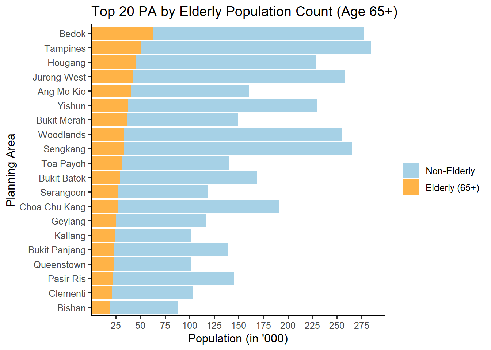

pacman::p_load(ggrepel, patchwork,
ggthemes, hrbrthemes,
tidyverse, ggplot2) Take-home Exercise 01B
Take-home Exercise 1 - Phase 2
Phase 2: to select one submission provided by a classmate, critic three good design principles and three areas for further improvement. With reference to the comment, prepare the makeover version of the data visualisation. I am selecting this submission from other classmate, as shown here.
The Designing Tool
The data should be processed by using appropriate tidyverse family of packages and the data visualisation must be prepared using ggplot2 and its extensions.
Import data
To accomplish the task, Singapore Residents by Planning Area / Subzone, Single Year of Age and Sex, June 2024 dataset shared by Department of Statistics, Singapore (DOS) will be used and we wil load it as follows:
pop_data <- read_csv("data/respopagesex2024.csv", col_names = TRUE)Data Visualization
1 Population pyramid (Sex vs Age)
Original Data Visualization:
pyramid_data <- pop_data %>%
group_by(Age, Sex) %>%
summarise(Pop = sum(Pop), .groups = "drop") %>%
mutate(Pop = ifelse(Sex == "Males", -Pop, Pop))
ggplot(pyramid_data, aes(x = Age, y = Pop, fill = Sex)) +
geom_bar(stat = "identity") +
coord_flip() +
scale_y_continuous(labels = abs) +
scale_fill_manual(values = c("Males" = "#102E50", "Females" = "#F7CFD8")) +
scale_x_discrete(breaks = seq(0, 100, by = 10)) +
labs(title = "Singapore Age Pyramid (2024)",
x = "Age", y = "Population") +
theme_classic()
Comments:
Three good design principles:
Different contrast colours are used to differentiate between Males and Females Resident count
Appropriate use of chart (pyramid chart) instead of points to represent discrete values
Clear labeling for chart title, legend, x axis title and y axis title
Three areas for further improvement:
Axis Labeling and Scale Consistency
Confusing x axis (starts from 0) and y axis (0 starts from the center) labeling. And, the distance between 0 to 10 to 20 on the y-axis is not consistent which signalling there is an error in the data preparation. The y-axis values ranges from 0 mark to 80 mark, whereas the dataset for Age ranges from 0 to 90+. There should be a 90 mark in the y-axis to represent the clearer and more accurate representation of the chart.
Graphical Integrity: The top chart shows 2 wide bars after tapering off of the top pyramid which is not a true representation of the dataset. There should be a data cleaning performed before the visualization to change the data type for Age column from strings to integer and there is 1 value in the Age column: 90_and_Over that needs to be recoded to a numeric number. The lack of data preparation has led to the wrong representation of the data in this chart.
Group Ages into 5-Year Bins: The current age pyramid displays age in single-year intervals, resulting in a visually dense and harder-to-read chart. Binning the ages into 5-year groups (e.g., 0–4, 5–9, …, 85–89, 90+) would simplify the structure and highlight broader population trends more effectively. Additionally, including a vertical line to indicate the median age would provide a valuable reference point, making it easier to interpret the overall age distribution and identify demographic imbalance
Makeover version of the Chart
Some data preparation is needed: - to make the age group of interval 5 years from 0 to 90+ - to change the data type of Age from character to numeric

library(dplyr)
library(ggplot2)
library(scales)
# Data preparation
pyramid_data <- pop_data %>%
mutate(Age = ifelse(Age == "90_and_Over", "91", Age),
Age = as.numeric(Age)) %>%
filter(!is.na(Age)) %>%
mutate(AgeGroup = cut(Age,
breaks = c(0, 5, 10, 15, 20, 25, 30, 35, 40, 45,
50, 55, 60, 65, 70, 75, 80, 85, 90, Inf),
right = TRUE,
include.lowest = TRUE,
labels = c("0–5", "6–10", "11–15", "16–20", "21–25",
"26–30", "31–35", "36–40", "41–45", "46–50",
"51–55", "56–60", "61–65", "66–70", "71–75",
"76–80", "81–85", "86–90", "90+"))) %>%
group_by(AgeGroup, Sex) %>%
summarise(Pop = sum(Pop, na.rm = TRUE), .groups = "drop") %>%
mutate(Pop = ifelse(Sex == "Males", -Pop, Pop),
Label = comma(abs(Pop), accuracy = 1),
Rank = dense_rank(desc(AgeGroup)))
median_group <- pyramid_data %>%
group_by(AgeGroup) %>%
summarise(TotalPop = sum(abs(Pop))) %>%
mutate(CumSum = cumsum(TotalPop),
MedianFlag = CumSum >= sum(TotalPop) / 2) %>%
filter(MedianFlag) %>%
slice(1) %>%
pull(AgeGroup)
# Plot
ggplot(pyramid_data, aes(x = AgeGroup, y = Pop, fill = Sex)) +
geom_bar(stat = "identity", width = 0.9) +
geom_text(aes(label = Label,
hjust = case_when(
AgeGroup %in% c("90+", "86–90") & Sex == "Males" ~ 1.1,
AgeGroup %in% c("90+", "86–90") & Sex == "Females" ~ -0.1,
Sex == "Males" ~ 0, # centered inside left bar
Sex == "Females" ~ 1.5 # centered inside right bar
)),
size = 3, color = "black") + # <- Added the missing plus sign here
geom_vline(xintercept = 0, color = "black") +
coord_flip() +
scale_y_continuous(labels = NULL, breaks = NULL) + # Remove x-axis tick values
scale_fill_manual(values = c("Males" = "#7EC8E3", "Females" = "#F7CFD8")) +
labs(title = "Singapore Population Age Pyramid (2024)",
x = "Age Group (Years)", y = NULL, fill = "Sex") +
theme_minimal(base_size = 11) +
theme(plot.title = element_text(size = 14, face = "bold"),
axis.text.y = element_text(size = 9),
panel.grid.major.y = element_blank(),
legend.position = "right") +
annotate("text", x = median_group, y = 0,
label = paste("Median:", median_group),
vjust = -0.8, fontface = "italic", color = "gray40", size = 4)2 Top 20 most popular planning areas with elderly population shown
Original Visualization:
library(tidyverse)
# Summarise total and elderly population by PA
top_areas <- pop_data %>%
group_by(PA) %>%
summarise(
Total = sum(Pop),
Elderly = sum(Pop[Age >= 65]),
.groups = "drop"
) %>%
top_n(15, Total) # or 20 if you prefer
# Reshape into long format for grouped bars
plot_data <- top_areas %>%
pivot_longer(cols = c(Total, Elderly),
names_to = "Type",
values_to = "Population") %>%
mutate(
Type = recode(Type,
"Total" = "Total Population",
"Elderly" = "Elderly (65+)")
)
# Reorder PA by Total Population (not elderly)
plot_data <- plot_data %>%
left_join(top_areas %>% select(PA, Total), by = "PA") %>%
mutate(PA = fct_reorder(PA, Total, .desc = FALSE)) # use forcats::fct_reorder
ggplot(plot_data, aes(x = PA, y = Population, fill = Type)) +
geom_col(position = "dodge") +
geom_text(aes(label = scales::comma(Population)),
position = position_dodge(width = 0.9), hjust = -0.1, size = 3) +
scale_y_continuous(labels = scales::comma,
expand = expansion(mult = c(0, 0.15))) +
scale_fill_manual(values = c("Total Population" = "#8E7DBE", "Elderly (65+)" = "#EFC000")) +
coord_flip() +
labs(
title = "Total vs Elderly Population in Top Planning Areas (2024)",
x = "Planning Area",
y = "Population",
fill = ""
) +
theme_classic()
Comments:
Three good design principles:
Effective use of contrast colours are used to differentiate between the total population and elderly population count by planning areas
Clear notation of the data values inside the chart
Clear labeling for legend, x axis and y axis title and mark.
Three areas for further improvement
The chart currently includes both detailed bar annotations and x-axis tick marks, which introduces visual redundancy. When values are already clearly displayed inside or beside the bars, retaining dense tick marks on the x-axis adds clutter without enhancing interpretability. It is advisable to choose either to annotate values inside the chart or to rely on well-spaced x-axis tick marks—not both. Removing one will streamline the visual presentation and improve focus on the data.
Misleading data due to insufficient data cleaning and preparation. The chart reflects inaccurate figures—e.g., Bedok’s elderly population is overstated as 70,130 instead of the correct 62,990—due to lack of data preparation. Proper data cleaning, including converting the Age column to numeric and recoding “90_and_Over” as 90, is essential to ensure data integrity and reliable insights.
Sorting and chart type The chart should be sorted by elderly population, not total population, to match its stated purpose. Using a stacked bar chart (rather than side-by-side horizontal barbars) would better show the elderly count in relation to the total population within each planning area.
Makeover version of the Chart

# Data Preparation
pop_data <- pop_data %>%
mutate(
Age = str_trim(Age),
Age = case_when(
Age == "90_and_Over" ~ "90",
str_detect(Age, "^[0-9]+$") ~ Age,
TRUE ~ NA_character_
),
Age = as.numeric(Age)
)
top_areas <- pop_data %>%
group_by(PA) %>%
summarise(
Total = sum(Pop, na.rm = TRUE),
Elderly = sum(Pop[Age >= 65], na.rm = TRUE),
.groups = "drop"
) %>%
slice_max(Elderly, n = 20)
# Prepare data
plot_data <- top_areas %>%
mutate(NonElderly = Total - Elderly) %>%
select(PA, Elderly, NonElderly) %>%
pivot_longer(cols = c(Elderly, NonElderly),
names_to = "Group",
values_to = "Population") %>%
mutate(Group = recode(Group,
"Elderly" = "Elderly (65+)",
"NonElderly" = "Non-Elderly"),
Group = factor(Group, levels = c("Non-Elderly", "Elderly (65+)"))) %>%
left_join(top_areas %>% select(PA, Elderly), by = "PA") %>%
mutate(PA = fct_reorder(PA, Elderly, .desc = FALSE))
# Plot
ggplot(plot_data, aes(x = PA, y = Population, fill = Group)) +
geom_col(width = 0.9) +
scale_y_continuous(
breaks = seq(25000, 300000, by = 25000),
labels = function(x) x / 1000, # Show in '000
expand = expansion(mult = c(0, 0.05))
) +
scale_fill_manual(values = c(
"Non-Elderly" = "#A6D1E6",
"Elderly (65+)" = "#FFB347"
)) +
coord_flip() +
labs(
title = "Top 20 PA by Elderly Population Count (Age 65+)",
x = "Planning Area",
y = "Population (in '000)",
fill = ""
) +
theme_classic(base_size = 12) +
theme(legend.position = "right")